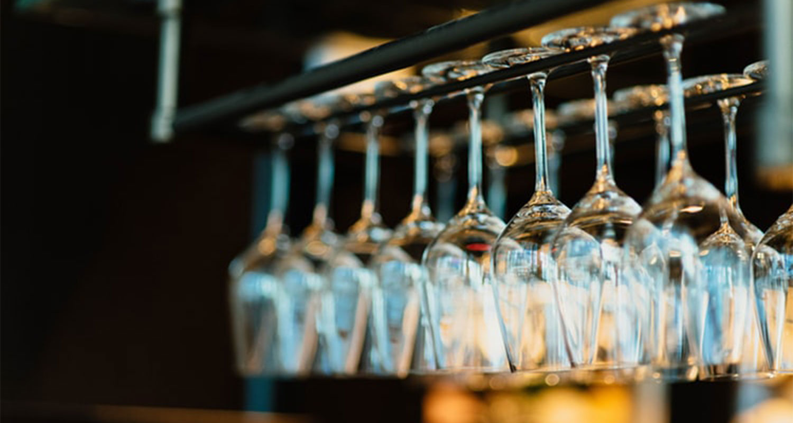
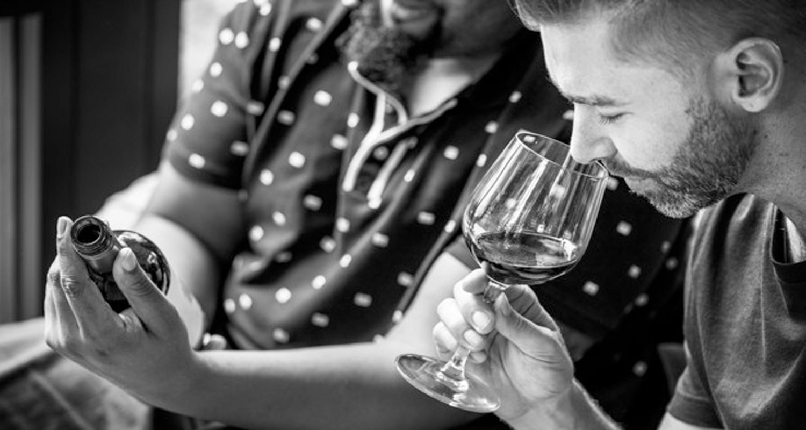
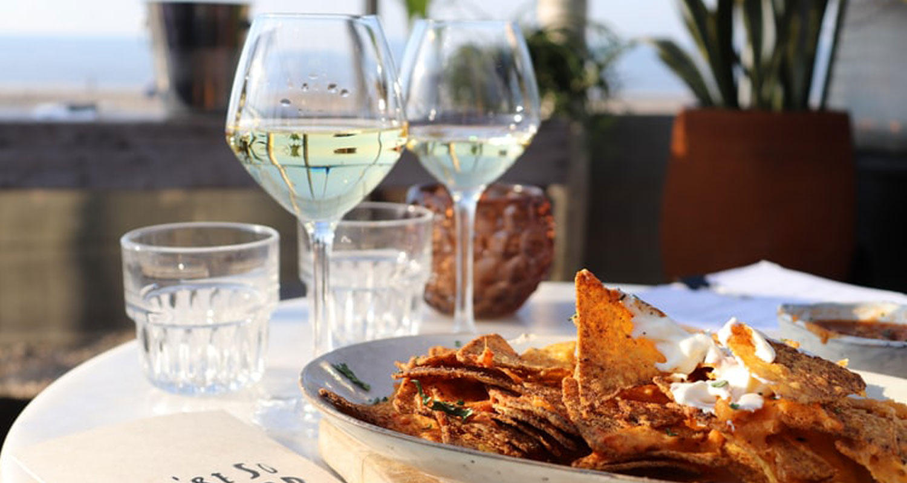

7 basic things a wine user must know
Wine is a luxurious drink is the most popular in the world. Even how to reward wine is an art that many people pursue. Here are seven basic things you must know if you want to conquer this fine wine.
1. Wine is only delicious when enjoyed in a suitable glass
In the early days when wine was born, people only used one type of glass to enjoy all kinds of wine. Until 1986, Georg Riedel launched the Vinum glass to enjoy wine but was considered redundant due to the habit of enjoying wine then.

Nowadays, people drink wine with many different design glasses. Through experience, even new drinkers realize that there is a big difference in taste when enjoying wine in different glasses. For example, enjoying red wine in a large glass will make the wine exposed to the atmosphere and easier to taste, while white wine glasses are tall and straight to retain the aroma of wine for a long time than.
2. The appropriate temperature for each type of wine is different
Any drink is recommended by the manufacturer at a specific temperature range to feel the best taste, and so is the wine. If a bottle of wine is too chilled, the taste of the wine will be settled down and the taste will be lost when enjoying, and when the temperature is too high, the alcohol will evaporate quickly, giving rise to the aroma of alcohol. ”When drinking alcohol.
- Red wine: should be used at a temperature lower than room temperature, from 12-22 degrees Celsius
- White wine: should be used at an ideal temperature of 1 - 15 degrees Celsius
- Sparkling wine: should be used at a temperature of 3 - 7 degrees C (chilled before use)
3. Red wine after extraction will give a better flavor
Decanter is often used to make wine more exposed to the air to make wine taste better. Large wine will help red wine contact with the air better, oxygen when exposed to red wine will break the inherent structure of the wine, helping wine reduce acridness and smell more.
Old-fashioned wine bottles (over 10 years old) will usually have a sediment on the bottom, so extracting the wine will separate the sediment from the wine. Usually the wine will be "breathed" in the air for about 30-60 minutes (depending on the type of wine) before serving. Meanwhile, the wine will become "softer" and drink very delicious.
4. How to pour wine
For each type of wine, note that only moderate amounts should be poured:
- Pouring red wine: Slowly pour the red wine around the middle of the glass until it is đầy cup full.
- Pour white wine / rose wine: Slowly pour the standard white wine into the middle of the glass until it is ⅓ full.
- Pour champagne wine: Pour small amounts to avoid stimulating too many bubbles. Pour a small amount onto the edge of the mouth, allow the bubbles to settle, then pour until it is ¾ cup full.
5. How to hold a glass

Usually people will hold a cup in whatever way is most convenient. However, to make wine more delicious, as well as become more sophisticated, you should remember a few basic principles. You can choose one of two ways: hold onto the stem or base and simply lift the glass, avoiding the temperature from the warmed hands to enjoy a glass of wine with the full flavor it brings.
6. Choose the right wine for food
Wine is often used in parties as well as family meals. However, a lame combination will greatly diminish the taste of wine and food.

In general, you should remember a few of the following rules:
- White wine has a prominent acidity, contains many acids that reduce the fatness of the dish, suitable for light bars such as seafood, steamed dishes or high-fat dishes.
- Red wine has a passionate, strong wine flavor, suitable for red meat dishes or corresponding tasty dishes.
- Rose wine should be served with light, not too greasy dishes with moderate density.
7. How long does the wine have opened?
Bottles after being opened should be finished as soon as possible. Once opened the wine is exposed to air and can be oxidized into vinegar. Preserving at low temperatures only makes the process slow, not completely disappear. Usually a bottle of wine tastes best when enjoyed in the first week.
These 7 things are basic but very important when using or enjoying wine. So be sure to become the best wine connoisseur!